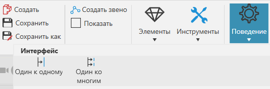
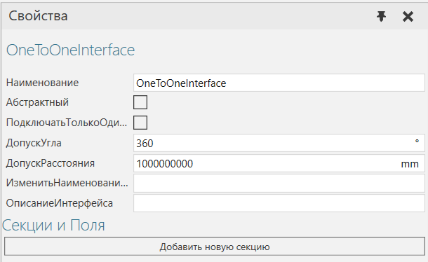
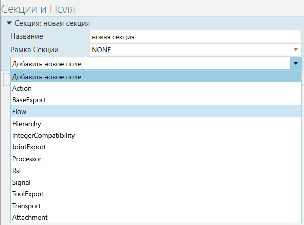
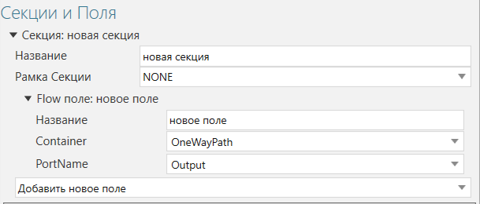

Перенос компонентов в другие компоненты |
|
Поведения, которые поддерживают материальный поток, могут быть подключены для передачи компонентов от одного компонента к другому с помощью поведения типа интерфейса. 1.В трехмерном мире выберите компонент. 2.Нажмите на вкладку Моделирование, а потом сделайте одно из следующих действий: ·Чтобы использовать существующий интерфейс, на панели Диаграмма компонента, Дерево узлов компонента, выберите интерфейс, который вы хотите использовать для передачи компонентов. Обратите внимание, что в большинстве случаев интерфейс необходимо отключить, чтобы он был доступен для редактирования. ·Чтобы создать новый интерфейс, на вкладке Моделирование в группе Поведение, нажмите кнопку Поведение, а затем под Интерфейсом, выберите тип интерфейса, который вы хотите использовать для передачи компонентов.  3.На панели Свойства, в зависимости от типа интерфейса, сделайте одно из следующих действий: ·Чтобы использовать существующую секцию, разверните секцию, которую вы хотите или должны использовать в интерфейсе. Например, в поведении интерфейса «один ко многим» вам нужно будет использовать его единственную секцию. ·Чтобы добавить новую секцию (применяется только к поведению Один к одному), нажмите Добавить новую секцию.  4.В выбранной секции сделайте одно из следующих действий: ·Чтобы использовать существующее поле потока, разверните поле потока, которое вы хотите использовать в разделе. ·Чтобы добавить новое поле потока, нажмите Добавить новое поле, а затем щелкните Flow.  5.В выбранном поле Flow выполните все следующие действия: ·В Container, выберите поведение, которое вы хотите использовать с интерфейсом. ·В PortName, щелкните коннектор поведения, указанного в контейнере, который вы хотите использовать для передачи.  6.Внесите другие необходимые изменения в интерфейс. |